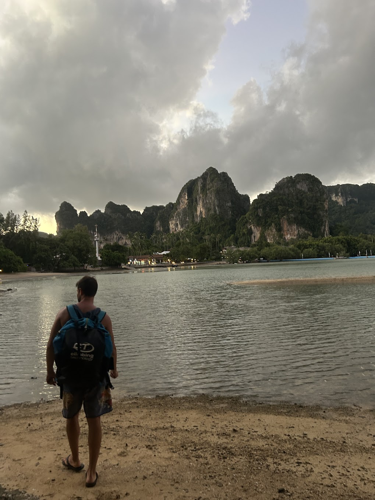

Thadeu Tucci
Engineer · minimalist · climber
I’m a software engineer passionate about distributed systems, automation, and building reliable tools that stay simple and transparent. Currently I’m a tech lead at Fireflies.ai, guiding the recording agent and AI-focused pipelines. I enjoy designing quiet, predictable systems that just work and feel pleasant to maintain.
My current work involves building AI-powered systems that help computers interpret and act on human interactions. I like problems that require both deep focus and creativity, balancing reliability with product intuition.
Outside of work, I’m drawn to mountains, minimalism, and reflective reading. I’ve lived between Brazil, France, and Southeast Asia, often preferring quiet mountain towns where life moves slowly. Living between these regions keeps me connected to different rhythms of life: the calm precision of French work culture, the warmth and creativity of Brazil, and the balance and simplicity of Southeast Asia.
I hold a Ph.D. in Computer Science from Université Bourgogne Franche-Comté (France), where my research focused on distributed systems and modular robots. The work explored how independent robotic modules can cooperate, self-organize, and adapt through decentralized coordination, combining engineering precision with emergent behavior.
- thadeutucci@gmail.com
- github.com/thadeuk
- linkedin.com/in/thadeutucci
- researchgate.net/profile/Thadeu-Tucci
- thadeutucci.medium.com
Research publications
- A Distributed Self-Assembly Planning Algorithm for Modular Robots
- Network Characterization of Lattice-Based Modular Robots
- Efficient Scene Encoding for Programmable Matter Self-Reconfiguration
- Programmable Matter as a Cyber-Physical Conjugation
Writing
- VisibleSim
A C++/OpenGL simulator for modular robotics developed during my Ph.D., used to study distributed coordination and morphology in self-organizing robots.
- GeoGuessr Solver
A tool for exploring and analyzing GeoGuessr locations, automating region detection and map pattern recognition. Built on a rest day in Tenerife.
- Dotfiles
My Arch Linux + i3/Hyprland + NeoVim environment with tuned scripts for focus, stability, and minimalism.

Rock Climbing
Climbing gives me the same satisfaction as a well-structured system, with its precision, balance, and flow. I’ve climbed in Fontainebleau (France), Igatu, Serra do Cipó, and Bocaina (Brazil), and on the sea cliffs of Tonsai and Railay in Thailand.
- Humanality (6b+, Tonsai)
- Mundo Mágico dos Abacates (6c+, Bocaina)
- Cravo e a Rosa (6c+, Serra do Cipó)
Boulder
- Marie Rose (6a, Fontainebleau)
- Casinha de Boneca (V5/7a, Igatu)
- Denorex (V5/7a, Igatu)
Books
- In Search of the Miraculous – P.D. Ouspensky
- Meditations – Marcus Aurelius
- Art – Yasmina Reza
Other Interests
- Vegetarian cooking, homemade pasta, cheese, and sourdough bread
- Exploring offline maps and remote mountain trails
- Writing about simplicity, systems, and consciousness
- Slow travel through small towns in Asia, Europe, and Latin America
- Learning languages and studying cultural nuances